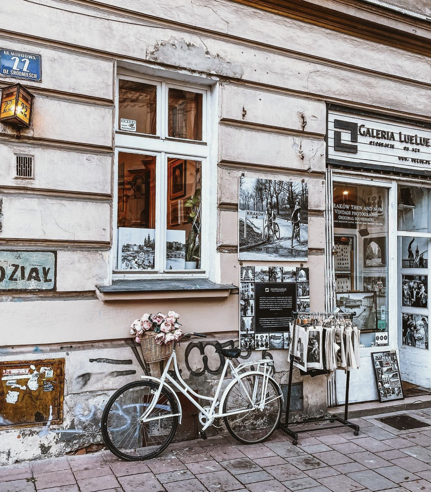

You Should Check out Kazimierz
The district of Kazimierz - once home to one of the most important Jewish communities in the world - is also enjoying a renaissance, while on the other side of the river, once-neglected Podgórze - known as the former site of the Jewish Ghetto and Schindler's Factory - has also become an essential part of the tourist trail.
Learn More
